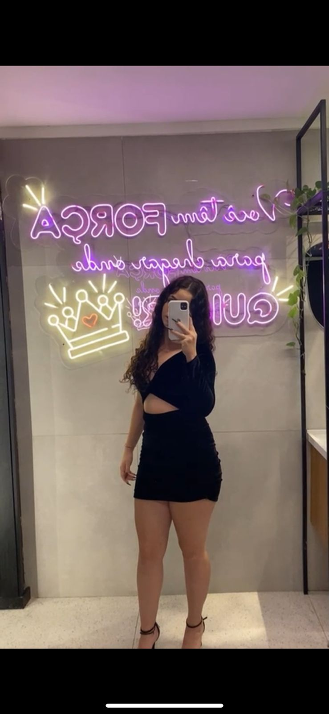

Olá, meu nome é Julia, mas gosto de ser chamada de Juh. Estou no ensino médio no colégio Ruben e cursando o 2º grau técnico em Administração. Tenho 16 anos. Nos dias vagos, faço academia. Pretendo trabalhar como veterinária e, no ano que vem, vou tentar entrar na UFRGS. Tenho bastante expectativa em relação a isso. Me inspiro muito na minha mãe, que é uma pessoa dedicada e batalhadora. Sempre me incentivou a seguir meus sonhos e a me esforçar nos estudos. A determinação dela é uma grande motivação para mim. Ela e minha avó me ensinaram a levar as coisas de uma forma mais leve e sempre tentar ajudar as pessoas .

| minha memoria favorita quando era criança | | Pessoas que eu admiro; |
|---|---|
| todos momentos que passei com minha avó | | meus pais e minha avó |